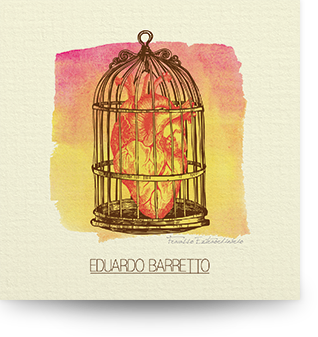

- soundcloud
- youtube
- flickr
- google+
- mono.tune.records
Talvez você esteja perto e eu deva fingir que me arrependi quem sabe até pedir desculpas mesmo que no fundo eu saiba que estava loucamente certo às vezes é preciso intervir deixar de lado a elegância mesmo que o estrago seja grande em um instante não saiba mais o que estou fazendo (ou porquê) e como um bárbaro barbarizando com um sorriso de satisfação
Vou confessar quando acendem meu pavio é melhor pular no mar caso esteja em um navio
Talvez eu deva ser discreto e simplesmente me distanciar deixar de lado a implicância ao menos uma vez me controlar infelizmente não dá certo quando alguém insiste em transbordar se uma gota me alcança eu sei que o estrago vai ser grande apavorante não sei mais o que eu estou quebrando (ou porquê)
e como um bárbaro barbarizando com um sorriso de satisfação
Vou confessar quando acendem meu pavio é melhor pular no mar caso esteja em um navio
Pense em mim como uma bala de canhão causa estrago mesmo sem ter direção
2. Nervo Craniano (Eduardo Barretto)A partir da retina ele atravessa o canal óptico e entra no crânio
3. Fracasso Extraordinário (Eduardo Barretto)Não penso em nada enquanto fico aqui parado perdi o jeito com pessoas sou um fracasso extraordinário e nada mais me interessa
Lembro que um dia eu estive por aí não posso mais o sol não toca o meu rosto
Mal posso sustentar o peso do meu corpo já desisti dessa ideia sou um fracasso extraordinário pra nada mais eu tenho pressa
Lembro que um dia eu estive por aí não posso o sol não toca o meu rosto
Não penso mais nas coisas que eu não posso mudar esqueço o caminho pra não precisar voltar perdi a mão nas coisas que envolvem a razão tentando ocultar o que eu tenho dentro da cabeça
4. Permanente e Infinito Frenesi (Eduardo Barretto)Vou tentar fazer como prometi só dessa vez meu bemmanter os pés no chão e evitar a velha extravagância
É difícil para mim não consigo evitar eu sei seguro a sua mão e grito delirante num permanente e infinito frenesi
Vou falar algo doce antes de te constranger meu bem sou como um balão de gás se me soltar eu voo para longe
É difícil para mim não consigo evitar eu sei seguro a sua mão e grito delirante num permanente e infinito frenesi
5. O Último Vagão (Eduardo Barretto)Pense bem se quer entrar no último vagão o trem não vai esperar algo perturbante prestes a se revelar meu bem não vou com você
Tento evitar os trilhos que levam a um lugar que eu não quero estar todos buscam loucamente alguém que lhes complete enquanto eu quero ficar só
Folhas flutuantes vem em minha direção o frio me faz refletir solto a sua mão e sigo sem me despedir meu bem não me queira mal
Tento evitar os trilhos que levam a um lugar que eu não quero estar todos buscam loucamente alguém que lhes complete enquanto eu quero ficar só
Simplesmente ficar só
Fracasso Extraordinário | EP (2014)
O EP de estreia, lançado pela Mono.Tune Records, retrata o lado mais sombrio da personalidade humana através de canções singelas, porém pesadas feito uma bigorna. Eduardo Barretto compôs, arranjou e gravou quase todos os instrumentos e utiliza, pela primeira vez, a própria voz pra dar contorno às suas histórias.
{kind=link}